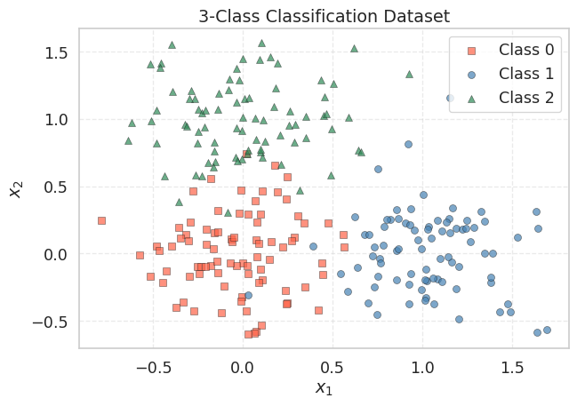
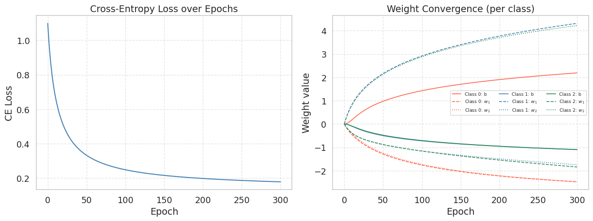
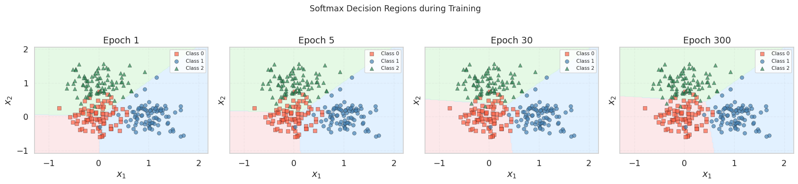

import numpy as np
import matplotlib.pyplot as plt
from matplotlib.colors import ListedColormap
from sklearn.datasets import make_blobs
import seaborn as sns
sns.set_theme(style='whitegrid', font_scale=1.2)
np.random.seed(42)Lab2-4. Softmax Regression via Gradient Descent

Objectives
- Extend binary logistic regression to multi-class classification using softmax regression (multinomial logistic regression).
- Implement the cross-entropy loss and its gradient in both element-wise and matrix form.
- Visualize how decision regions evolve during training, partitioning the feature space into \(K\) classes.
Background
From Sigmoid to Softmax
Logistic regression handles two classes by squeezing a single linear score through the sigmoid. When we have \(K > 2\) classes, the natural generalization is softmax regression. Instead of one weight vector \(\mathbf{w} \in \mathbb{R}^d\), we learn a weight matrix \(\mathbf{W} \in \mathbb{R}^{d \times K}\) — one column per class. The model computes \(K\) raw scores (logits) for each sample and converts them into a probability distribution using the softmax function.
Softmax Function
Given a logit vector \(\mathbf{z} = [z_1, \dots, z_K]^\top\), the softmax function assigns each class a probability:
\[\text{softmax}(\mathbf{z})_k = \frac{e^{z_k}}{\sum_{j=1}^{K} e^{z_j}}, \qquad k = 1, \dots, K\]
All outputs are positive and sum to 1, forming a valid probability distribution. When \(K = 2\), softmax reduces exactly to sigmoid applied to the difference \(z_1 - z_2\).
Cross-Entropy Loss
Let \(\mathbf{y}_i\) be the one-hot encoding of the label for sample \(i\) — a vector of length \(K\) with a single 1 at the true class position and 0 elsewhere. The cross-entropy loss over \(n\) samples is:
\[\mathcal{L}_{\text{CE}}(\mathbf{W}) = -\frac{1}{n} \sum_{i=1}^{n} \sum_{k=1}^{K} y_{ik} \log p_{ik}\]
where \(\mathbf{p}_i = \text{softmax}(\mathbf{X}_i \mathbf{W})\). Since \(\mathbf{y}_i\) is one-hot, only the term for the true class survives in the inner sum:
\[\mathcal{L}_{\text{CE}} = -\frac{1}{n} \sum_{i=1}^{n} \log p_{i,\, c_i}\]
where \(c_i\) is the true class of sample \(i\). This is the negative log-probability of the correct class, averaged over all samples.
Gradient (Not included in the exam)
In logistic regression, the gradient is
\[ \nabla_\mathbf{w} \mathcal{L}_{\text{BCE}} = \frac{1}{n}\mathbf{X}^\top (\mathbf{p} - \mathbf{y}) \]
Softmax regression keeps the same feature-weighted error pattern, but now there is one probability/error term per class, so the gradient becomes a matrix rather than a vector. We will not derive this from scratch here, but the stacking structure is useful to see.
If we define the error matrix \(\mathbf{E} = \mathbf{P} - \mathbf{Y}\), then each entry of the gradient is
\[\frac{\partial \mathcal{L}}{\partial W_{jk}} = \frac{1}{n}\sum_{i=1}^{n} e_{ik} \, x_{ij}\]
For a fixed class \(k\), collecting the partial derivatives with respect to all feature weights gives one gradient column:
\[ \begin{bmatrix} \frac{\partial \mathcal{L}}{\partial W_{1k}} \\ \frac{\partial \mathcal{L}}{\partial W_{2k}} \\ \vdots \\ \frac{\partial \mathcal{L}}{\partial W_{dk}} \end{bmatrix} = \frac{1}{n} \begin{bmatrix} \sum_{i=1}^{n} e_{ik} x_{i1} \\ \sum_{i=1}^{n} e_{ik} x_{i2} \\ \vdots \\ \sum_{i=1}^{n} e_{ik} x_{id} \end{bmatrix} \]
Doing this for every class and placing those columns side by side gives the full gradient matrix:
\[ \nabla_\mathbf{W}\mathcal{L} = \begin{bmatrix} \frac{\partial \mathcal{L}}{\partial W_{11}} & \frac{\partial \mathcal{L}}{\partial W_{12}} & \cdots & \frac{\partial \mathcal{L}}{\partial W_{1K}} \\ \frac{\partial \mathcal{L}}{\partial W_{21}} & \frac{\partial \mathcal{L}}{\partial W_{22}} & \cdots & \frac{\partial \mathcal{L}}{\partial W_{2K}} \\ \vdots & \vdots & \ddots & \vdots \\ \frac{\partial \mathcal{L}}{\partial W_{d1}} & \frac{\partial \mathcal{L}}{\partial W_{d2}} & \cdots & \frac{\partial \mathcal{L}}{\partial W_{dK}} \end{bmatrix} = \frac{1}{n}\mathbf{X}^\top \mathbf{E} = \frac{1}{n}\mathbf{X}^\top (\mathbf{P} - \mathbf{Y}) \]
where \(\mathbf{P}\) is the \(n \times K\) matrix of predicted probabilities and \(\mathbf{Y}\) is the \(n \times K\) one-hot label matrix.
This is the same stacking idea as before, now lifted from a vector to a matrix: in logistic regression we stacked partial derivatives into one gradient vector, while in softmax regression we stack one such vector per class to form the gradient matrix. Multiplying by \(\mathbf{X}^\top\) computes the feature-weighted average of these class-wise errors — exactly the same pattern as the binary case.
0. Setup
1. Softmax Regression via Gradient Descent
1.1 Generating Synthetic Data
We create the same 2-feature dataset from the logistic regression lab, but this time we keep all three original cluster labels instead of collapsing them to binary.
np.random.seed(42)
X_raw, y_multi = make_blobs(
n_samples=250,
centers=[(0, 0), (1.0, 0.0), (0.0, 1.0)],
cluster_std=[0.3, 0.3, 0.3],
random_state=42
)
K = 3 # number of classes
n = len(y_multi)
# Build the design matrix: prepend a column of ones for the bias term
# X_aug has shape (250, 3): each row is [1, x1_i, x2_i]
X_aug = np.column_stack([np.ones(n), X_raw])
# One-hot encode: Y_onehot has shape (n, K)
Y_onehot = np.zeros((n, K))
Y_onehot[np.arange(n), y_multi] = 1.0
print(f"X_aug shape : {X_aug.shape}") # (250, 3)
print(f"Y_onehot shape : {Y_onehot.shape}") # (250, 3)
print(f"Classes : {np.unique(y_multi)}")
print(f"Samples/class : {[int(np.sum(y_multi == k)) for k in range(K)]}")X_aug shape : (250, 3)
Y_onehot shape : (250, 3)
Classes : [0 1 2]
Samples/class : [84, 83, 83]The design matrix X_aug is identical to the logistic regression lab: each row is \([1, x_{i1}, x_{i2}]\). The key difference is the label representation — from a binary vector to a one-hot matrix \(\mathbf{Y}\) of shape \((n, K)\).
fig, ax = plt.subplots(figsize=(7, 5))
markers = ['s', 'o', '^']
colors = ['tomato', 'steelblue', 'seagreen']
labels = ['Class 0', 'Class 1', 'Class 2']
for k in range(K):
mask = y_multi == k
ax.scatter(X_raw[mask, 0], X_raw[mask, 1],
marker=markers[k], color=colors[k], edgecolors='k',
linewidths=0.4, label=labels[k], alpha=0.7)
ax.set_title("3-Class Classification Dataset")
ax.set_xlabel("$x_1$")
ax.set_ylabel("$x_2$")
ax.legend()
ax.grid(True, linestyle='--', alpha=0.4)
plt.tight_layout()
plt.show()
The three clusters are well-separated: Class 0 near the origin, Class 1 along the positive \(x_1\) axis, and Class 2 along the positive \(x_2\) axis. A linear model should be able to partition these three regions with high accuracy.
1.2 Implementing the Loss and Gradient
We implement the softmax, cross-entropy loss, and gradient following the formulas from the Background section. The weight matrix \(\mathbf{W}\) has shape \((d, K) = (3, 3)\): three input dimensions (bias, \(x_1\), \(x_2\)) times three classes.
Element-wise view. For a single sample \(i\) with true class \(c_i\), the predicted probability vector is \(\mathbf{p}_i = \text{softmax}(\mathbf{X}_i \mathbf{W})\). The error for class \(k\) is:
\[e_{ik} = p_{ik} - y_{ik} = \begin{cases} p_{ik} - 1 & \text{if } k = c_i \\ p_{ik} & \text{otherwise} \end{cases}\]
The gradient contribution from sample \(i\) to the weight connecting feature \(j\) to class \(k\) is \(e_{ik} \cdot x_{ij}\). Averaging over all samples gives \(\frac{\partial \mathcal{L}}{\partial W_{jk}} = \frac{1}{n} \sum_i e_{ik} \, x_{ij}\), which in matrix form is \(\frac{1}{n} \mathbf{X}^\top (\mathbf{P} - \mathbf{Y})\).
def softmax(Z):
"""
Numerically stable softmax over rows.
Subtracting the row-max prevents overflow in exp.
Z has shape (n, K); returns P with the same shape.
"""
Z_stable = Z - Z.max(axis=1, keepdims=True)
E = np.exp(Z_stable)
return E / E.sum(axis=1, keepdims=True)
def ce_loss(X, Y, W):
"""
Cross-entropy loss for softmax regression.
X: (n, d), Y: (n, K) one-hot, W: (d, K)
L = -(1/n) * sum_i sum_k Y_ik * log(P_ik)
"""
P = softmax(X @ W) # (n, K)
eps = 1e-12
return -float(np.mean(np.sum(Y * np.log(P + eps), axis=1)))
def ce_gradient_elementwise(X, Y, W):
"""
Compute the gradient by iterating over samples and features.
This makes each step explicit for pedagogical clarity.
Returns dL/dW of shape (d, K).
"""
n, d = X.shape
K = Y.shape[1]
P = softmax(X @ W) # (n, K)
E = P - Y # (n, K) error matrix
grad = np.zeros((d, K))
for j in range(d): # for each feature (including bias)
for k in range(K): # for each class
grad[j, k] = (1.0 / n) * np.sum(E[:, k] * X[:, j])
return grad
def ce_gradient(X, Y, W):
"""
Same result in one line using matrix multiplication.
(1/n) * X^T @ (P - Y) computes all d×K partial derivatives at once.
"""
n = X.shape[0]
P = softmax(X @ W) # (n, K)
return (1.0 / n) * (X.T @ (P - Y)) # (d, K)The structure mirrors the binary case almost exactly:
| Binary (Logistic) | Multi-class (Softmax) |
|---|---|
sigmoid(X @ w) → probabilities (scalar per sample) |
softmax(X @ W) → probabilities (vector per sample) |
bce_loss: \(-\frac{1}{n}\sum[y\log p + (1{-}y)\log(1{-}p)]\) |
ce_loss: \(-\frac{1}{n}\sum_i \log p_{i,c_i}\) |
bce_gradient: \(\frac{1}{n}\mathbf{X}^\top(\mathbf{p} - \mathbf{y})\) |
ce_gradient: \(\frac{1}{n}\mathbf{X}^\top(\mathbf{P} - \mathbf{Y})\) |
| \(\mathbf{w} \in \mathbb{R}^d\) (vector) | \(\mathbf{W} \in \mathbb{R}^{d \times K}\) (matrix) |
Let us verify that both gradient implementations produce the same result:
W_init = np.zeros((X_aug.shape[1], K)) # (3, 3)
grad_elem = ce_gradient_elementwise(X_aug, Y_onehot, W_init)
grad_matrix = ce_gradient(X_aug, Y_onehot, W_init)
print(f"Initial CE loss : {ce_loss(X_aug, Y_onehot, W_init):.4f}")
print(f"Expected : {-np.log(1.0 / K):.4f} (= -log(1/K), uniform prediction)")
print(f"\nGradient (element-wise):\n{grad_elem.round(4)}")
print(f"\nGradient (matrix):\n{grad_matrix.round(4)}")
print(f"\nMatch: {np.allclose(grad_elem, grad_matrix)}")Initial CE loss : 1.0986
Expected : 1.0986 (= -log(1/K), uniform prediction)
Gradient (element-wise):
[[-0.0027 0.0013 0.0013]
[ 0.1211 -0.2308 0.1097]
[ 0.1095 0.1073 -0.2168]]
Gradient (matrix):
[[-0.0027 0.0013 0.0013]
[ 0.1211 -0.2308 0.1097]
[ 0.1095 0.1073 -0.2168]]
Match: TrueAt \(\mathbf{W} = \mathbf{0}\), softmax outputs \(p_k = 1/K = 1/3\) for every class and every sample, so the initial loss is \(-\log(1/3) \approx 1.0986\). The gradient for each class reflects the imbalance between the uniform prediction (\(1/3\)) and the actual class proportions, weighted by the mean feature values.
1.3 Writing the Training Loop
The training loop is structurally identical to train_logistic — the only difference is that W is a matrix instead of a vector.
def train_softmax(X, Y, lr=0.5, epochs=500):
"""
Full-batch gradient descent for softmax regression.
Parameters
----------
X : (n, d) design matrix (with bias column)
Y : (n, K) one-hot labels
lr : float learning rate
epochs : int number of passes
Returns
-------
W_history : list of (d, K) arrays, length epochs+1
loss_history : list of float, length epochs+1
"""
d, K = X.shape[1], Y.shape[1]
W = np.zeros((d, K))
W_history = [W.copy()]
loss_history = [ce_loss(X, Y, W)]
for _ in range(epochs):
grad = ce_gradient(X, Y, W)
W = W - lr * grad # gradient descent update
W_history.append(W.copy())
loss_history.append(ce_loss(X, Y, W))
return W_history, loss_history
TipComparing the Binary and Multi-Class Training Loops
The update rule \(\mathbf{W} \leftarrow \mathbf{W} - \eta \nabla_\mathbf{W}\mathcal{L}\) is exactly the same — NumPy handles the matrix subtraction element-wise. The .copy() is still necessary for the same reason as before: without it, every entry in W_history would point to the same (final) matrix.
1.4 Running the Optimizer
W_hist, loss_hist = train_softmax(X_aug, Y_onehot, lr=0.5, epochs=300)
W_final = W_hist[-1]
P_final = softmax(X_aug @ W_final)
pred_multi = np.argmax(P_final, axis=1)
accuracy = float(np.mean(pred_multi == y_multi))
print(f"Initial loss : {loss_hist[0]:.4f}")
print(f"Final loss : {loss_hist[-1]:.4f}")
print(f"Accuracy : {accuracy * 100:.1f}%")
print(f"\nLearned W (rows = [bias, w1, w2], cols = classes 0, 1, 2):")
print(W_final.round(4))Initial loss : 1.0986
Final loss : 0.1788
Accuracy : 95.6%
Learned W (rows = [bias, w1, w2], cols = classes 0, 1, 2):
[[ 2.1905 -1.0978 -1.0928]
[-2.4749 4.3155 -1.8406]
[-2.477 -1.7428 4.2199]]fig, axes = plt.subplots(1, 2, figsize=(13, 5))
# --- Left: loss curve ---
axes[0].plot(loss_hist, color='steelblue', lw=1.5)
axes[0].set_title("Cross-Entropy Loss over Epochs")
axes[0].set_xlabel("Epoch")
axes[0].set_ylabel("CE Loss")
axes[0].grid(True, linestyle='--', alpha=0.5)
# --- Right: weight convergence ---
param_names = ['b', '$w_1$', '$w_2$']
class_colors = ['tomato', 'steelblue', 'seagreen']
line_styles = ['-', '--', ':']
W_arr = np.array(W_hist) # (epochs+1, d, K)
for k in range(K):
for j in range(W_arr.shape[1]):
axes[1].plot(W_arr[:, j, k], color=class_colors[k],
ls=line_styles[j], lw=1.2,
label=f"Class {k}: {param_names[j]}")
axes[1].set_title("Weight Convergence (per class)")
axes[1].set_xlabel("Epoch")
axes[1].set_ylabel("Weight value")
axes[1].legend(fontsize=7, ncol=3, loc='best')
axes[1].grid(True, linestyle='--', alpha=0.5)
plt.tight_layout()
plt.show()
The loss decreases monotonically — cross-entropy is convex, so gradient descent is guaranteed to converge (for a small enough learning rate). The weight matrix has \(d \times K = 9\) parameters evolving simultaneously. Each class develops its own bias and feature weights:
- Class 0 (origin): should have small or negative weights for \(w_1\) and \(w_2\).
- Class 1 (right): should have a large positive \(w_1\) and a small \(w_2\).
- Class 2 (upper): should have a small \(w_1\) and a large positive \(w_2\).
1.5 Visualizing the Decision Regions
In the binary case, the decision boundary was a single line separating two half-planes. With \(K = 3\) classes, each pair of classes has a boundary where \(p_j = p_k\), and the feature space is partitioned into three regions. We visualize this by coloring every point in the plane according to the predicted class.
def draw_softmax_regions(X_aug, X_raw, y, W, ax, title="", resolution=200):
"""
Fill the background with predicted class regions and overlay data points.
"""
x1_min, x1_max = X_raw[:, 0].min() - 0.5, X_raw[:, 0].max() + 0.5
x2_min, x2_max = X_raw[:, 1].min() - 0.5, X_raw[:, 1].max() + 0.5
xx1, xx2 = np.meshgrid(np.linspace(x1_min, x1_max, resolution),
np.linspace(x2_min, x2_max, resolution))
X_grid = np.column_stack([np.ones(xx1.size), xx1.ravel(), xx2.ravel()])
preds = np.argmax(softmax(X_grid @ W), axis=1).reshape(xx1.shape)
# Background regions
cmap_bg = ListedColormap(['#FADADD', '#D0E8FF', '#D5F5D5'])
ax.contourf(xx1, xx2, preds, levels=[-0.5, 0.5, 1.5, 2.5],
cmap=cmap_bg, alpha=0.6)
# Data points
markers = ['s', 'o', '^']
colors = ['tomato', 'steelblue', 'seagreen']
labels = ['Class 0', 'Class 1', 'Class 2']
for k in range(3):
mask = y == k
ax.scatter(X_raw[mask, 0], X_raw[mask, 1],
marker=markers[k], color=colors[k], edgecolors='k',
linewidths=0.4, alpha=0.7, label=labels[k])
ax.set_xlabel("$x_1$")
ax.set_ylabel("$x_2$")
ax.set_title(title)
ax.legend(fontsize=8)
ax.grid(True, linestyle='--', alpha=0.4)fig, axes = plt.subplots(1, 4, figsize=(18, 4), sharex=True, sharey=True)
snapshot_epochs = [1, 5, 30, 300]
for ax, ep in zip(axes, snapshot_epochs):
draw_softmax_regions(X_aug, X_raw, y_multi, W_hist[ep], ax,
title=f"Epoch {ep}")
plt.suptitle("Softmax Decision Regions during Training", fontsize=13, y=1.02)
plt.tight_layout()
plt.show()
At epoch 1, the regions are nearly uniform — the weights have barely moved from zero, so every point receives roughly \(p_k \approx 1/3\) for all classes. As training progresses, the three regions tighten around their respective clusters. By epoch 300, each cluster is enclosed in its own region, with the boundaries meeting at a central point — the Voronoi-like partition that softmax regression produces in feature space.
Unlike the binary case where the boundary was a single line, here we see three pairwise boundaries (one per pair of classes), each defined by the hyperplane \((\mathbf{w}_j - \mathbf{w}_k)^\top \mathbf{x} = 0\). All three boundaries intersect at a single point, creating a three-way junction.
Summary
| Logistic Regression | Softmax Regression | |
|---|---|---|
| Classes | \(K = 2\) | \(K \geq 2\) |
| Activation | Sigmoid \(\sigma(z)\) | Softmax \(\text{softmax}(\mathbf{z})\) |
| Parameters | \(\mathbf{w} \in \mathbb{R}^d\) (vector) | \(\mathbf{W} \in \mathbb{R}^{d \times K}\) (matrix) |
| Loss | BCE: \(-\frac{1}{n}\sum[y\log p + (1{-}y)\log(1{-}p)]\) | CE: \(-\frac{1}{n}\sum_i \log p_{i,c_i}\) |
| Gradient | \(\frac{1}{n}\mathbf{X}^\top(\mathbf{p} - \mathbf{y})\) | \(\frac{1}{n}\mathbf{X}^\top(\mathbf{P} - \mathbf{Y})\) |
| Boundary | Single hyperplane | \(\binom{K}{2}\) pairwise hyperplanes |
- Softmax regression generalizes logistic regression to \(K\) classes. The sigmoid becomes softmax, the weight vector becomes a matrix, and BCE becomes cross-entropy — but the gradient retains the same \(\frac{1}{n}\mathbf{X}^\top(\mathbf{P} - \mathbf{Y})\) structure.
- The decision boundary partitions the feature space into \(K\) convex regions. Each pairwise boundary is a hyperplane, and all boundaries meet at a central junction — a Voronoi-like partition induced by the linear model.
- The gradient formula is identical in structure to the binary case. This is not a coincidence: softmax with cross-entropy is the canonical link for the multinomial distribution, just as sigmoid with BCE is canonical for the Bernoulli.
References
- Bishop, C. M. (2006). Pattern Recognition and Machine Learning. Springer. (Chapter 4.3: Multi-class logistic regression)
- Goodfellow, I., Bengio, Y., and Courville, A. (2016). Deep Learning. MIT Press. (Section 6.2.2.3: Softmax)